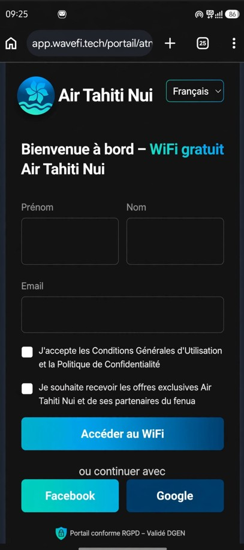
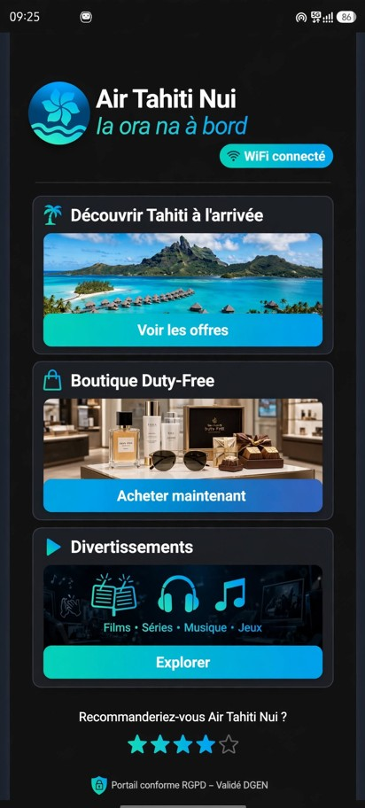

WaveFi - Wi-Fi Marketing sur mesure pour le fenua
Le constat : Avec l'arrivée du Wi-Fi Starlink gratuit sur vos Boeing 787-9 dès 2027, Air Tahiti Nui disposera d'un canal de communication direct avec 100% de ses passagers long-courriers. Ce coût fixe représente une opportunité unique de générer des revenus ancillaires tout en enrichissant l'expérience à bord.
Monétisez la connexion via des offres partenaires locales (hôtels, excursions, duty-free), du retail media et des contenus sponsorisés. Estimation : 1,50€ à 3€ par passager connecté.
Accueillez vos passagers avec un portail aux couleurs d'ATN ("Ia ora na à bord"). Intégrez des infos pratiques et un sondage NPS en 1 clic pour mesurer la satisfaction en temps réel.
Collecte d'emails opt-in dans le strict respect du RGPD. Portail sécurisé avec consentement granulaire. Solution déjà validée par la DGEN.
WaveFi n'intervient pas sur l'installation réseau ou Starlink. Notre solution se branche simplement sur le portail existant via une redirection sécurisée, en accord avec vos équipes Marketing et DSI.
Découvrez ci-contre un aperçu du parcours passager personnalisé pour les vols PPT-LAX et PPT-CDG.

